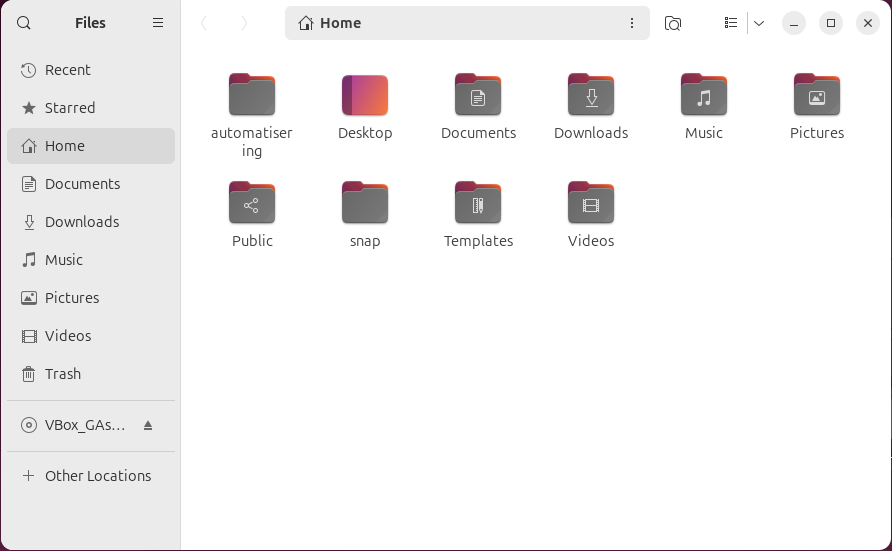
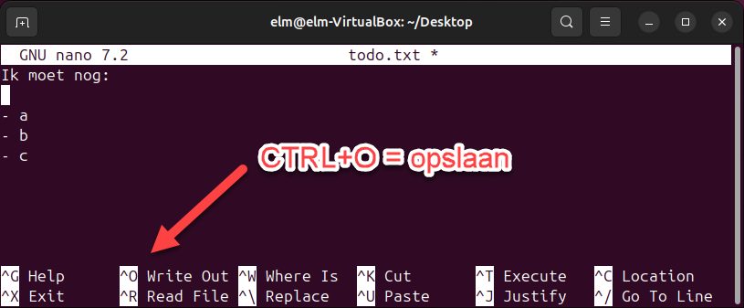
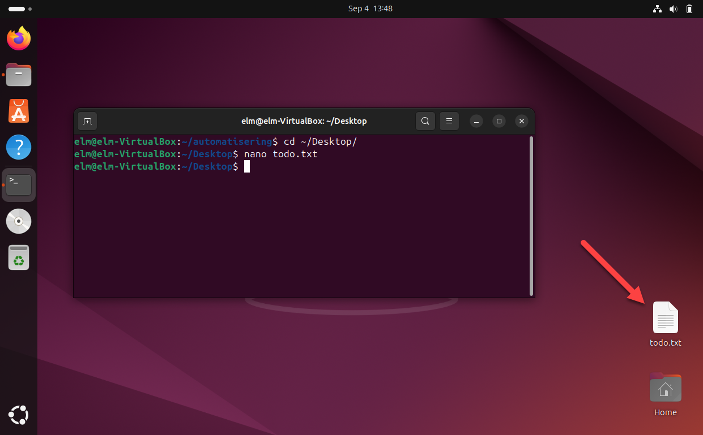
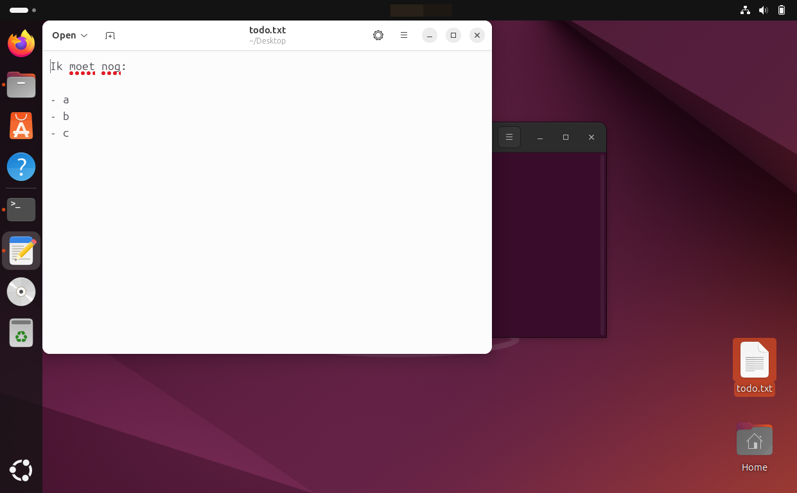
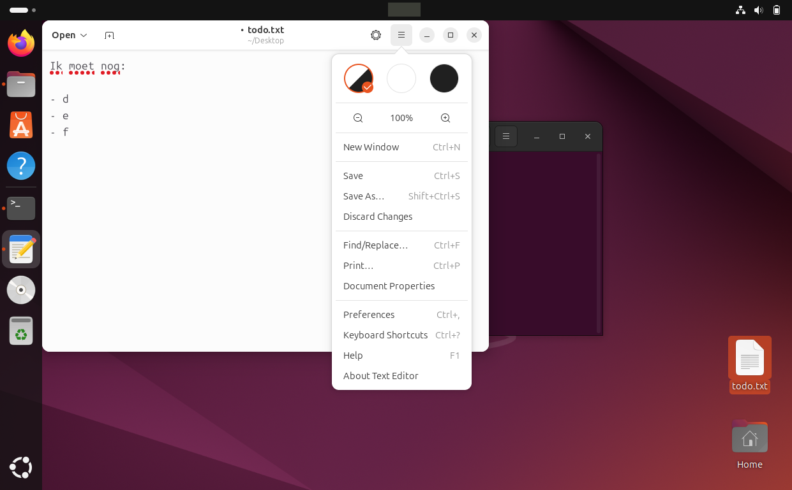
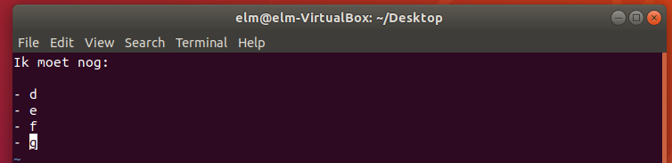

Je maakt drie mappen aan die je in de rest van de oefening blijft gebruiken, en daarna een tekstbestand met twee editors die je in de terminal zelf bedient.
Met mkdir, van make directory, maak je een map in de map waar je staat. De naam die
je wil zet je erachter.
Ga naar je eigen map, maak er de map automatisering in aan, en kijk of ze er staat.
/home/elm
total 120K
drwxr-x--- 17 elm elm 4.0K Sep 4 13:39 .
drwxr-xr-x 3 root root 4.0K Aug 22 15:41 ..
drwxrwxr-x 2 elm elm 4.0K Sep 4 13:39 automatisering
-rw------- 1 elm elm 105 Aug 27 11:03 .bash_history
-rw-r--r-- 1 elm elm 220 Mar 31 10:41 .bash_logout
-rw-r--r-- 1 elm elm 3.7K Mar 31 10:41 .bashrc
drwx------ 10 elm elm 4.0K Aug 27 10:26 .cache
...
Ga in de nieuwe map staan en kijk wat erin zit. Typ cd auto en vul aan met
TAB.
/home/elm/automatisering
total 8.0K drwxrwxr-x 2 elm elm 4.0K Sep 4 13:39 . drwxr-x--- 17 elm elm 4.0K Sep 4 13:39 ..
De map is leeg: er staan alleen de twee namen in die in elke map staan, de map zelf en haar bovenliggende map.
Open Files en kijk of de map er ook daar staat. De terminal en de bestandsverkenner tonen dezelfde schijf.

Maak nu zelf, onder /home/elm, nog twee mappen bij: elektromechanica
en klimatisering. Het resultaat is dit:
/home/elm/automatisering/ /home/elm/elektromechanica/ /home/elm/klimatisering/
Op de volgende pagina's kopieer, verplaats en wis je precies deze mappen. Controleer met
ls -alh dat ze alle drie onder /home/elm staan en dat de namen juist
gespeld zijn.
De eenvoudigste teksteditor in de terminal is nano. Je zet de bestandsnaam erachter, en bestaat het bestand nog niet, dan maakt nano het aan.
Ga naar je bureaublad en open daar een nieuw bestand todo.txt.
Typ enkele regels in. Onderaan het venster staan de sneltoetsen, waarbij het dakje voor CTRL staat.

Sla op met CTRL+O en dan ENTER, en sluit af met CTRL+X.
Kijk naar je bureaublad: het bestand staat er.

Dubbelklik het bestand. Het opent in de grafische teksteditor, met dezelfde inhoud als in nano.

Pas de tekst aan en sla op via het menu rechtsboven, met Save.

Er is daar geen grafisch bureaublad en dikwijls staat nano er niet op, terwijl vi op zowat elke Linux-machine aanwezig is. Daarom staat hij hier ook al is nano makkelijker.
Open hetzelfde bestand met vi.
Vi begint in de stand waarin je navigeert en niet typt. Druk op a, van append, om te beginnen typen.
Zet er onderaan nog een regel bij. Wil je met de pijltjestoetsen ergens anders heen, druk dan eerst op ESC om te stoppen met typen, en daarna weer op a om verder te typen.

Druk op ESC en typ :wq, van write en quit, gevolgd door
ENTER.
| Wat je typt | Wat er gebeurt |
|---|---|
:w |
Opslaan en in het bestand blijven |
:q |
Afsluiten, en dat lukt alleen wanneer er niets te bewaren is |
:wq |
Opslaan en afsluiten |
:q! |
Afsluiten en je wijzigingen weggooien |
Ga terug naar je eigen map met cd ~.